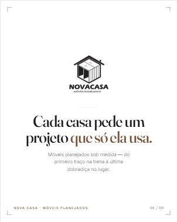
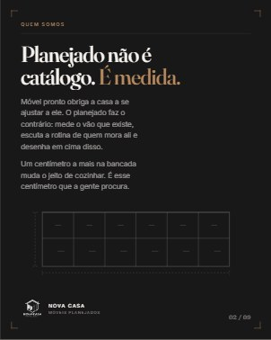
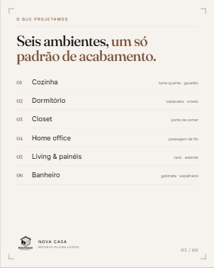
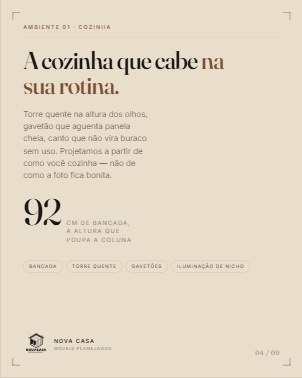
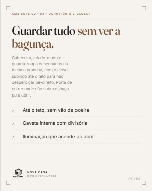
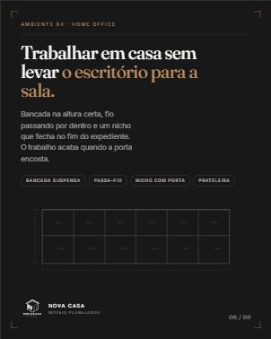
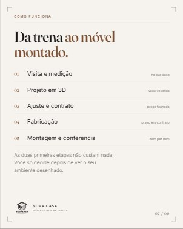
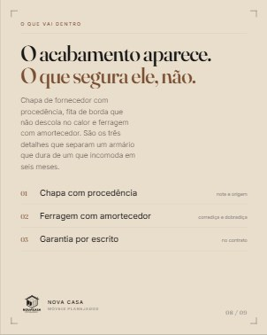
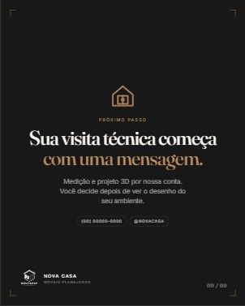

Cada arte abaixo já está no tamanho certo do Instagram. Toque na arte para abri-la em tamanho real e salvar,
e no ícone ⧉ no canto da legenda para copiar o texto e colar direto no app. Siga a ordem de
01 a 09 e o seu perfil fecha a grade de nove com a mesma cara.
Como o perfil vai ficar









O Instagram corta a miniatura do perfil em quadrado, então nada importante encosta nas bordas das artes.
A alternância entre fundo claro, cru e escuro é o que dá ritmo à grade.
No app: editar destaque › editar capa › escolher da galeria. A arte já está centralizada, não precisa ajustar.
Nomeie os destaques exatamente assim: Cozinha · Dormitório · Closet · Home Office · Living · Banheiro ·
Projeto 3D · Orçamento.
Abre a série. Nenhuma promessa, nenhum preço: só a marca e a ideia de projeto sob medida.
legendaCada casa pede um projeto que só ela usa.
Móvel de loja obriga a casa a se ajustar. O planejado faz o contrário: começa na trena, na medida real do seu vão, e termina na dobradiça que fecha em silêncio.
Somos a Nova Casa. Nos próximos posts a gente abre o processo inteiro — do primeiro desenho à montagem.#MoveisPlanejados #NovaCasa #Marcenaria #SobMedida #DesignDeInteriores #Planejados
Explica a diferença para quem ainda compara com móvel de loja.
legendaPlanejado não é catálogo. É medida.
Um centímetro a mais na bancada muda o jeito de cozinhar. Uma gaveta na altura certa poupa a sua coluna todo dia. É esse detalhe que a gente vai procurar na sua casa.
Antes de desenhar qualquer coisa, a gente mede e escuta a rotina de quem mora ali.#MoveisPlanejados #Marcenaria #ProjetoSobMedida #NovaCasa #Arquitetura
Post de referência. Vale fixar no topo do perfil junto com o 01.
legendaSeis ambientes, um só padrão de acabamento.
01 Cozinha · 02 Dormitório · 03 Closet · 04 Home office · 05 Living e painéis · 06 Banheiro
O mesmo cuidado de projeto vale para o armário inteiro e para a gaveta de talher. Qual desses ambientes está te incomodando hoje? Comenta aqui embaixo.#Planejados #Cozinha #Closet #HomeOffice #MoveisSobMedida #NovaCasa
Primeiro ambiente detalhado — costuma ser o que mais gera mensagem.
legendaA cozinha que cabe na sua rotina.
Torre quente na altura dos olhos, gavetão que aguenta panela cheia, canto que não vira buraco sem uso. A bancada em 92 cm poupa a coluna de quem cozinha todo dia.
Projetamos a partir de como você cozinha — não de como a foto fica bonita.#CozinhaPlanejada #Cozinha #MoveisPlanejados #Marcenaria #NovaCasa
Bom candidato a carrossel, com fotos de projetos entregues.
legendaGuardar tudo sem ver a bagunça.
Cabeceira, criado-mudo e guarda-roupa desenhados na mesma prancha. O closet sobe até o teto para não desperdiçar pé-direito, e a porta de correr resolve o quarto onde não sobra espaço para abrir.
Gaveta interna com divisória e luz que acende ao abrir: o que parece detalhe é o que você usa todo dia.#Closet #GuardaRoupaPlanejado #Dormitorio #MoveisPlanejados #NovaCasa
Fala com quem trabalha em casa — público grande e com verba.
legendaTrabalhar em casa sem levar o escritório para a sala.
Bancada na altura certa, fio passando por dentro e um nicho que fecha no fim do expediente. O trabalho acaba quando a porta encosta.
Dá para fazer isso em 1,20 m de parede. Manda a medida do seu canto que a gente estuda.#HomeOffice #MoveisPlanejados #EscritorioEmCasa #Marcenaria #NovaCasa
legendaDa trena ao móvel montado.
01 Visita e medição, na sua casa
02 Projeto em 3D, você vê antes de decidir
03 Ajuste e contrato, com preço fechado
04 Fabricação, no prazo do contrato
05 Montagem e conferência, item por item
As duas primeiras etapas não custam nada. Você só decide depois de ver o seu ambiente desenhado.#MoveisPlanejados #ProjetoDeInteriores #Marcenaria #NovaCasa #Reforma
Post de confiança. É o que responde a objeção de preço.
legendaO acabamento aparece. O que segura ele, não.
Chapa com procedência, fita de borda que não descola no calor e ferragem com amortecedor. São os três detalhes que separam um armário que dura de um que começa a incomodar em seis meses.
Quando comparar orçamentos, pergunte por esses três. A diferença de preço quase sempre está aí.#MoveisPlanejados #Qualidade #Marcenaria #MDF #NovaCasa
Fecha a grade e converte quem acompanhou a série inteira.
legendaSua visita técnica começa com uma mensagem.
Medição e projeto 3D por nossa conta. Você decide depois de ver o desenho do seu ambiente, com o preço fechado na sua frente.
Chama no direct ou no WhatsApp e conta qual ambiente você quer resolver primeiro.#MoveisPlanejados #OrcamentoSemCompromisso #NovaCasa #Marcenaria #SobMedida
Frases de efeito · para intercalar
Estas doze não fazem parte da sequência de estreia — elas entram entre os posts, quando você quiser
aparecer sem explicar nada. Uma frase, um convite. Publique uma a cada dois ou três posts da série.
01 · Seu armário devia caber na sua casaMóvel de loja obriga a casa a se ajustar. O planejado começa pela medida do seu vão. Manda uma foto do ambiente no direct que a gente te diz o que dá para fazer.
12 · Falta o projetoSua casa já tem o espaço. Chama no direct e a gente marca a visita.
Notas de publicação
Ordem e ritmo
Publique de 01 a 09 na sequência, dois ou três posts por semana. Os nove fecham a grade 3×3 do perfil — postar fora de ordem quebra o desenho.
O que fixar no topo
Fixe o 01 e o 03. Juntos eles dão marca e serviço para quem chega pela primeira vez.
Bio sugerida
Móveis planejados sob medida · projeto 3D antes de decidir · [cidade/região] · orçamento no direct.
Vira carrossel
O 03, o 05 e o 07 funcionam bem como carrossel: use a arte como capa e fotos de projetos entregues nas telas seguintes.
Stories
Republique cada post no story no dia da publicação, com enquete simples: "qual ambiente você resolveria primeiro?".
Foto e destaques
Troque a foto de perfil pela variante linho antes do primeiro post, e crie os oito destaques com as capas desta página.
Antes de publicar, confirme com a gente: telefone, @ do perfil, cidade de atendimento e prazo
de garantia aparecem nas artes e nas legendas como marcador — o post 09 está com (00) 00000-0000.
Também vale enviar a logo em vetor: o arquivo atual tem 150 px e fica macio nas peças grandes.